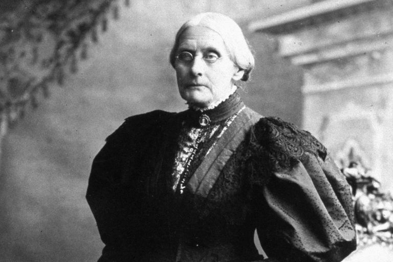
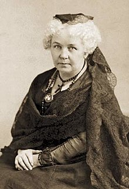
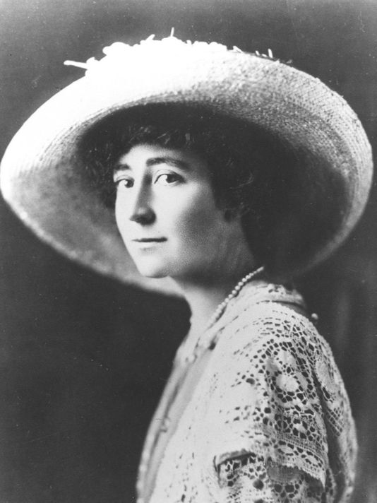
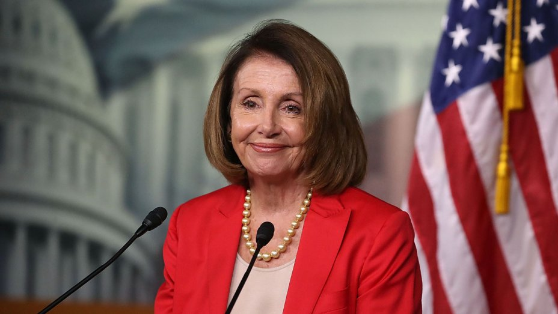
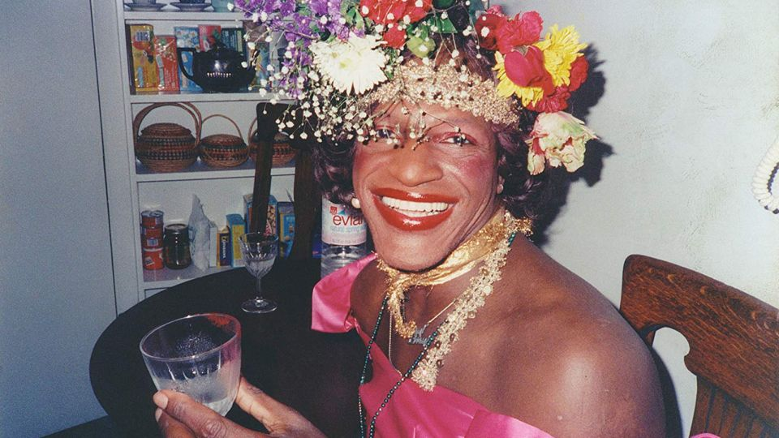
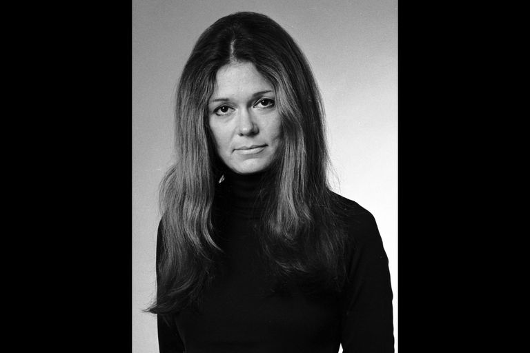
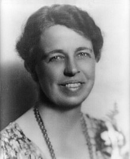
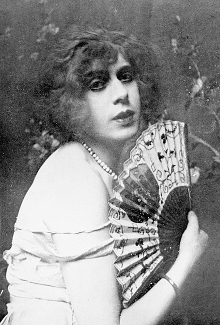

Susan B. Anthony
Susan B. Anthony was an American social reformer and women's rights activist who played a pivotal role in the women's suffrage movement. Born into a Quaker family committed to social equality, she collected anti-slavery petitions at the age of 17. In 1856, she became the New York state agent for the American Anti-Slavery Society.
In 1872, Anthony was arrested for voting in her hometown of Rochester, New York, and convicted in a widely publicized trial. Although she refused to pay the fine, the authorities declined to take further action. In 1878, Anthony and Elizabeth Cady Stanton arranged for Congress to be presented with an amendment giving women the right to vote. Introduced by Sen. Aaron A. Sargent (R-CA), it later became known colloquially as the Susan B. Anthony Amendment. It was ratified as the Nineteenth Amendment to the U.S. Constitution in 1920.
Elizabeth Cady Stanton
Elizabeth Cady Stanton was an American suffragist, social activist, abolitionist, and leading figure of the early women's rights movement. Her Declaration of Sentiments, presented at the Seneca Falls Convention held in 1848 in Seneca Falls, New York, is often credited with initiating the first organized women's rights and women's suffrage movements in the United States. Stanton was president of the National Woman Suffrage Association from 1892 until 1900.
Unlike many of those involved in the women's rights movement, Stanton addressed various issues pertaining to women beyond voting rights. Her concerns included women's parental and custody rights, property rights, employment and income rights, divorce, the economic health of the family, and birth control.
Jeannette Rankin
Jeannette Rankin was an American politician and women's rights advocate, and the first woman to hold federal office in the United States. She was elected to the U.S. House of Representatives from Montana in 1916, and again in 1940. She remains the only woman elected to Congress by Montana.
Each of Rankin's Congressional terms coincided with initiation of U.S. military intervention in each of the two world wars. A lifelong pacifist, she was one of 50 House members, along with six Senators, who opposed the war declaration of 1917, and the only member of Congress to vote against declaring war on Japan after the attack on Pearl Harbor in 1941.
A member of the Republican Party during the Progressive Era, Rankin was also instrumental in initiating the legislation that eventually became the 19th Constitutional Amendment, granting unrestricted voting rights to women. In her victory speech, she recognized the power she held as the only woman able to vote in Congress, saying "I am deeply conscious of the responsibility resting upon me". She championed the causes of women's rights and civil rights throughout a career that spanned more than six decades.
Debra Haaland

Debra Anne Haaland is an American attorney and politician serving as the U.S. Representative for New Mexico's 1st congressional district. The district includes almost three-fourths of Albuquerque, along with most of that city's suburbs.
She and Sharice Davids are the first two Native American women elected to the U.S. Congress. Haaland is a former chair of the Democratic Party of New Mexico.
Geraldine Anne Ferraro

Geraldine Anne Ferraro (August 26, 1935 – March 26, 2011) was an American politician, diplomat, and attorney. She served in the United States House of Representatives from 1979 to 1985, and was the Democratic Party's vice presidential nominee in the 1984 presidential election, running alongside Walter Mondale; this made her the first female vice-presidential nominee representing a major American political party. She was also a journalist, author, and businesswoman.
In 1984, former vice president and presidential candidate Walter Mondale, seen as an underdog, selected Ferraro to be his running mate in the upcoming election. In doing so Ferraro also became the first widely recognized Italian American to be a major-party national nominee. The positive polling the Mondale-Ferraro ticket received when she joined soon faded, as damaging questions arose about her and her businessman husband's finances and wealth and her Congressional disclosure statements. In the general election, Mondale and Ferraro were defeated in a landslide by incumbent President Ronald Reagan and Vice President George H. W. Bush.
Ruth Bader Ginsburg

Ruth Bader Ginsburg is an Associate Justice of the Supreme Court of the United States. Ginsburg was appointed by President Bill Clinton and took the oath of office on August 10, 1993. She is the second female justice (after Sandra Day O'Connor) of four to be confirmed to the court. She is generally viewed as belonging to the liberal wing of the court. Ginsburg has received attention in American popular culture for her fiery liberal dissents and refusal to step down; she has been dubbed the "Notorious R.B.G."
Ginsburg earned her bachelor's degree at Cornell University, and became a wife and mother before starting law school at Harvard, where she was one of the few women in her class. She transferred to Columbia Law School, where she graduated tied for first in her class.
Ginsburg spent a considerable part of her legal career as an advocate for the advancement of gender equality and women's rights, winning multiple victories arguing before the Supreme Court. She advocated as a volunteer lawyer for the American Civil Liberties Union and was a member of its board of directors and one of its general counsels in the 1970s.
Condoleezza "Condi" Rice

Condoleezza Rice (born November 14, 1954) is an American diplomat and political scientist who is the current director of the Hoover Institution at Stanford University. A member of the Republican Party, she previously served as the 66th United States secretary of state from 2005 to 2009 and as the 19th U.S. national security advisor from 2001 to 2005. Rice was the first female African-American secretary of state and the first woman to serve as national security advisor. Until the election of Barack Obama as president in 2008, Rice and her predecessor, Colin Powell, were the highest-ranking African Americans in the history of the federal executive branch (by virtue of the secretary of state standing fourth in the presidential line of succession). At the time of her appointment as Secretary of State, Rice was the highest-ranking woman in the history of the United States to be in the presidential line of succession.
Rice was born in Birmingham, Alabama, and grew up while the South was racially segregated. She obtained her bachelor's degree from the University of Denver and her master's degree in political science from the University of Notre Dame. In 1981, she received a PhD from the School of International Studies at the University of Denver. She worked at the State Department under the Carter administration and served on the National Security Council as the Soviet and Eastern Europe affairs advisor to President George H. W. Bush during the dissolution of the Soviet Union and German reunification from 1989 to 1991. On December 17, 2000, she joined the Bush administration as President George W. Bush's national security advisor. In Bush's second term, she succeeded Colin Powell as Secretary of State, thereby becoming the first African-American woman, second African-American after Powell, and second woman after Madeleine Albright to hold this office.
Hillary Rodham Clinton

Hillary Rodham Clinton is an American politician, diplomat, lawyer, writer, and public speaker. She served as the First Lady of the United States from 1993 to 2001, U.S. Senator from New York from 2001 to 2009, 67th United States Secretary of State from 2009 to 2013, and as the Democratic Party's nominee for President of the United States in the 2016 election.
Clinton graduated from Wellesley College in 1969 and earned a Juris Doctor from Yale Law School in 1973. After serving as a congressional legal counsel, she moved to Arkansas and married Bill Clinton in 1975. In 1977, she co-founded Arkansas Advocates for Children and Families. She was appointed the first female chair of the Legal Services Corporation in 1978, and became the first female partner at Little Rock's Rose Law Firm the following year. As First Lady of Arkansas, she led a task force whose recommendations helped reform Arkansas's public schools.
As First Lady of the United States, Clinton was an advocate for gender equality and healthcare reform. In 2000, Clinton was elected as the first female Senator from New York, and was reelected to the Senate in 2006. She unsuccessfully ran for President in 2008, losing the Democratic nomination to Barack Obama. She then served as the U.S. Secretary of State in the Obama Administration from 2009 to 2013.
Clinton made a second presidential run in 2016. She received the most votes and primary delegates in the 2016 Democratic primaries, and formally accepted her party's nomination for President of the United States on July 28, 2016. She became the first female candidate to be nominated for president by a major U.S. political party. She lost the presidential election in the Electoral College, despite winning a plurality of the popular vote. She received more than 65 million votes, the 3rd-highest count in a U.S. presidential election, behind Obama's victories in 2008 and 2012.
Lauren Underwood

Lauren Underwood is an American nurse and politician who serves as the U.S. Representative for Illinois's 14th congressional district as a member of the Democratic Party.
Underwood received a degree in nursing from the University of Michigan and two master's degrees from Johns Hopkins University. She started her career as a policy professional in the Obama Administration in 2014 and later worked as a Senior Advisor at the Department of Health and Human Services (HHS).
In 2018, she was elected to the United States House of Representatives. Upon her swearing in, Underwood became the youngest black woman to serve in Congress.
Kamala Harris

Kamala Harris is an American attorney and politician serving as the junior United States Senator for California since 2017. A member of the Democratic Party, she previously served as the 32nd Attorney General of California from 2011 to 2017, and as District Attorney of San Francisco from 2004 to 2010.
Born in Oakland, California, Harris is a graduate of Howard University and University of California, Hastings College of the Law. In the 1990s, Harris worked in the San Francisco District Attorney's Office and the City Attorney of San Francisco's office. In 2004, Harris was elected District Attorney of San Francisco.
Harris was narrowly elected as California's Attorney General in 2010 and reelected in 2014 by a wide margin. On November 8, 2016, she defeated Loretta Sanchez in the 2016 Senate election to succeed outgoing Senator Barbara Boxer, becoming California's third female U.S. Senator and the first of either Indian or Jamaican descent.
Nancy Pelosi
Nancy Pelosi is an American politician serving as speaker of the United States House of Representatives since January 2019. First elected to Congress in 1987, she is the only female to have served as Speaker, and is the highest-ranking elected woman in United States history. Pelosi is second in the presidential line of succession, immediately after the vice president.
A member of the Democratic Party, Pelosi is currently in her 17th term as a congresswoman, representing California's 12th congressional district (since 2013), which consists of four-fifths of the city and county of San Francisco. She has led House Democrats since 2003 (the first woman to lead a party in Congress), serving as Speaker twice (2007–2011 and 2019–present) and as House Minority Leader twice (2003–2007 and 2011–2019). She has also served as House Minority Whip (2002–2003).
Pelosi was a major opponent of the Iraq War as well as the Bush Administration's 2005 attempt to privatize Social Security. During her first speakership, she was instrumental in the passage of many landmark bills, including the Affordable Care Act, the Dodd–Frank Wall Street Reform and Consumer Protection Act, the Don't Ask, Don't Tell Repeal Act, along with the American Recovery and Reinvestment Act and 2010 Tax Relief Act which served as economic stimulus amidst the Great Recession.
Marsha P. Johnson
Marsha P. Johnson, along with Sylvia Rivera and other transgender and gender non-conforming people of color, has been credited with starting the infamous Stonewall Uprising of 1969. When police raided the Stonewall Inn, a gay bar in New York City, in June of that year — as they had many times before — Johnson and others who were there that night decided they'd had enough and fought back. The ensuing protest lasted six days and is considered the start of the modern LGBTQ+ rights movement. The first Pride parade was held in June of the following year to commemorate the uprising. After Stonewall, Johnson continued her activist work and co-founded the Street Transvestite Action Revolutionaries (STAR) House with Rivera. The two women, who were both sex workers and homeless for much of their lives, saw that the needs of gender non-conforming and homeless youth weren't being met by gay rights groups of the day and started STAR House in response. It was the first LGBTQ+ youth shelter in the U.S. and the first organization led by trans women of color. In the wake of the HIV/AIDS crisis in the 1980s, Johnson became caregiver to friend and fellow activist Randy Wicker's lover. Her connection to the community led Johnson to attend early meetings of AIDS advocacy group ACT UP. She was an outspoken activist for people with AIDS, transgender people, and homeless youth until her death in 1992.
Sharice Davids

Sharice Davids is an American attorney and politician serving as the U.S. Representative for Kansas's 3rd congressional district since 2019. A member of the Democratic Party, she represents a district that includes most of the Kansas side of the Kansas City metropolitan area.
A lawyer educated at the University of Missouri–Kansas City and Cornell Law School, Davids also was a professional mixed martial artist in the 2010s.
Davids, along with Deb Haaland of New Mexico, is the first Native American woman elected to Congress. Davids is also the first openly lesbian and LGBT member of Congress from Kansas.
Shirley Chisholm

Shirley Chisholm was an American politician, educator, and author. In 1968, she became the first black woman elected to the United States Congress, and she represented New York's 12th congressional district for seven terms from 1969 to 1983. In 1972, she became the first black candidate for a major party's nomination for President of the United States, and the first woman to run for the Democratic Party's presidential nomination.
Gloria Steinem
Gloria Steinem is an American feminist, journalist, and social political activist who became nationally recognized as a leader and a spokeswoman for the American feminist movement in the late 1960s and early 1970s.
Steinem was a columnist for New York magazine, and a co-founder of Ms. magazine. In 1969, Steinem published an article, "After Black Power, Women's Liberation", which brought her to national fame as a feminist leader.
In 2005, Steinem, Jane Fonda, and Robin Morgan co-founded the Women's Media Center, an organization that works "to make women visible and powerful in the media".
Michelle Obama

Michelle Obama is an American writer, lawyer, and university administrator who served as the First Lady of the United States from 2009 to 2017. She is married to the 44th U.S. President, Barack Obama, and was the first African-American First Lady. Obama is a graduate of Princeton University and Harvard Law School. In her early legal career, she worked at the law firm Sidley Austin, where she met Barack Obama. Michelle married Barack in 1992 and they have two daughters.
As First Lady, Obama served as a role model for women, and worked as an advocate for poverty awareness, education, nutrition, physical activity and healthy eating. She supported American designers and was considered a fashion icon.
Angela Davis

Angela Davis is an American political activist, academic, and author. She emerged as a prominent counterculture activist in the 1960s working with the Communist Party USA, of which she was a member until 1991, and was briefly involved in the Black Panther Party during the Civil Rights Movement.
Davis is a professor emerita at the University of California, Santa Cruz, in its History of Consciousness Department. She is also a former director of the university's Feminist Studies department. Her research interests are feminism, African-American studies, critical theory, Marxism, popular music, social consciousness, and the philosophy and history of punishment and prisons. She co-founded Critical Resistance, an organization working to abolish the prison–industrial complex.
Eleanor Roosevelt
Eleanor Roosevelt was an American political figure, diplomat and activist. She served as the First Lady of the United States from March 1933 to April 1945 during her husband President Franklin D. Roosevelt's four terms in office, making her the longest serving First Lady of the United States. Roosevelt served as United States Delegate to the United Nations General Assembly from 1945 to 1952.
Though widely respected in her later years, Roosevelt was a controversial First Lady at the time for her outspokenness, particularly her stance on racial issues. She was the first presidential spouse to hold regular press conferences, write a daily newspaper column, write a monthly magazine column, host a weekly radio show, and speak at a national party convention. On a few occasions, she publicly disagreed with her husband's policies. She advocated for expanded roles for women in the workplace, the civil rights of African Americans and Asian Americans, and the rights of World War II refugees.
Following her husband's death in 1945, Roosevelt remained active in politics for the remaining 17 years of her life. She pressed the United States to join and support the United Nations and became its first delegate. She served as the first chair of the UN Commission on Human Rights and oversaw the drafting of the Universal Declaration of Human Rights.
Lili Elbe
Lili Ilse Elvenes, better known as Lili Elbe, was a Danish painter, trans woman and among the early recipients of gender-affirming surgery. Though she became famous as a painter under her legal name, Einar Wegener, in 1930 she changed her legal name to Lili Ilse Elvenes (later adopting the surname Elbe), and stopped painting after transitioning. Earlier that year, she traveled to Germany for gender affirmation surgery–highly experimental at the time. She endured four surgeries, including a uterus transplant. Unfortunately, Lili’s immune system rejected the transplant, and she died from cardiac arrest due to infection just three months after her last surgery.